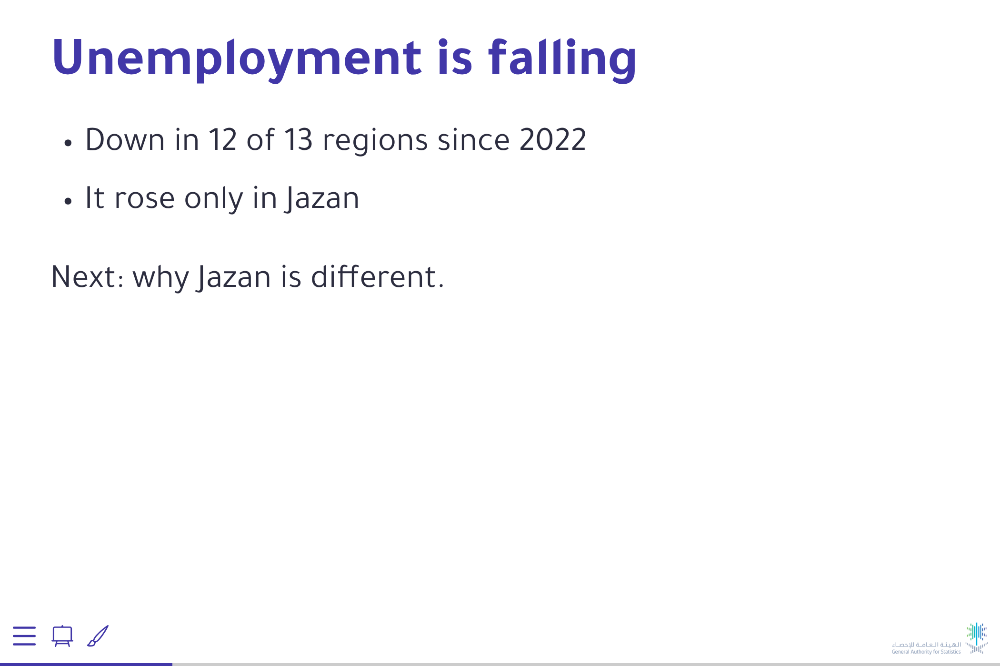
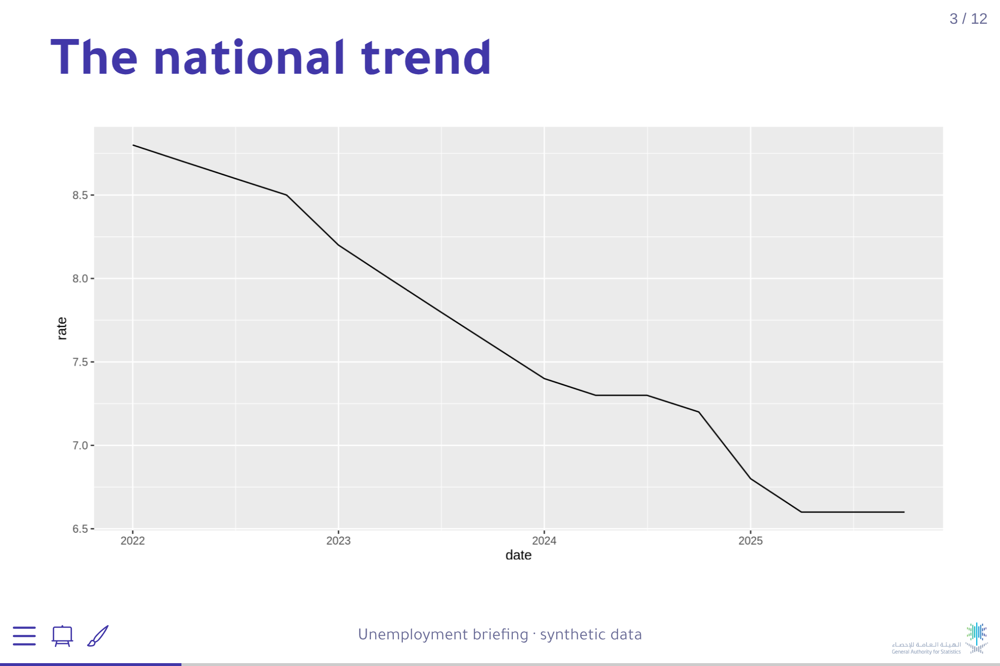

_brand.yml next to the deck and render: Revealjs takes the colours and fonts, with no change to slides.qmd.logo, footer and slide-number go on every slide. The number matters most: it is how the room asks about slide 6.